Simulació de l'eclipsi del 12/08/2026 sobre terreny real
Projecte d'Entorns Gràfics (EGRA) · Alícia Martí, Oriol Mota i Elena Gutiérrez · Web de seguiment, versió local 6 (26/10/2026)
Volem veure l'eclipsi total de Sol del 12 d'agost de 2026 sobre el relleu real d'Espanya: explorar el terreny des de fora i, després, situar-nos en un punt concret, a l'altura dels ulls, per veure com la Lluna tapa el Sol i si alguna muntanya l'amaga abans. El programa està fet amb Python i OpenGL a partir de l'estructura dels reptes de classe, amb el relleu de l'IGN i les dades oficials de l'eclipsi del CNIG. La prioritat és entendre el que fem i poder-ho explicar.
Cada subobjectiu té un sol desplegable amb l'explicació. L'estat surt de criteris
comprovables, que són al final de cada apartat:
VALIDAT l'equip ho ha comprovat i entès,
FET comprovat per Claude i pendent de l'equip,
PENDENT encara no fet,
NO COMPLEIX comprovat i lluny de l'objectiu.
El progrés només compta els criteris validats.
Fonts: actes 1 i 3 (PDF), acta 2, el pla de treball i el codi de la
branca reorganitzacio-projecte.
Què hi ha ara i què està planificat
| Funcionalitat | Estat | Observacions |
|---|---|---|
| La Terra, el Sol i la Lluna en un sol model geomètric, amb posicions reals | ACTUAL | Comprovat contra el CNIG; falta la prova de l'equip. |
| Relleu de la península (200 m) i zones de 5 m (Picos, Vic, l'Escala i el Vallès) posats sobre la Terra | ACTUAL | Fora d'Espanya, només la textura del globus. Les zones catalanes es descarreguen a part (no són al Git). |
| Ombra de la Lluna movent-se sobre la Terra i el terreny | ACTUAL | Calculada per a cada punt; dins de la umbra del CNIG. |
| Observar des del terra (ulls fixos, mirada lliure) i explorar fins a l'espai | ACTUAL | P només reprodueix o pausa el temps. |
| Ubicacions amb coordenades verificades (ICGC i OpenStreetMap) | ACTUAL | Plaça Major de Vic, ajuntaments de l'Escala, Cerdanyola i Montmeló, plaça Cívica de la UAB (tasca 0.3). |
| Ombres de les muntanyes (shadow mapping) | ACTUAL | Només dins de la zona de 5 m de l'observador (tasca 6.1). |
| Anell de relleu de 25 m fins a ~100 km | PLANIFICAT | Ara, entre la zona de 5 m i els ~100 km, el relleu és el de 200 m (tasca 4.3). |
| Espai de navegació limitat (cub amb parets translúcides) i mirada amb el ratolí capturat | ACTUAL | Pendent de la prova de l'equip amb el ratolí i el trackpad (F12). |
| Condicions meteorològiques | PLANIFICAT | Tasca 6.2. |
O1 · Simulador de l'eclipsi sobre terreny real
Objectiu 1 de l'acta 3: una simulació interactiva amb dades reals del terreny i de l'eclipsi, que es pugui mirar des de fora i des del terra, amb el Sol i la Lluna al seu lloc, la llum que canvia i el pas del temps.
O1.1 · Dades del terreny Tenir el relleu real de les zones que ens interessen, amb prou detall i de manera que es pugui tornar a descarregar.
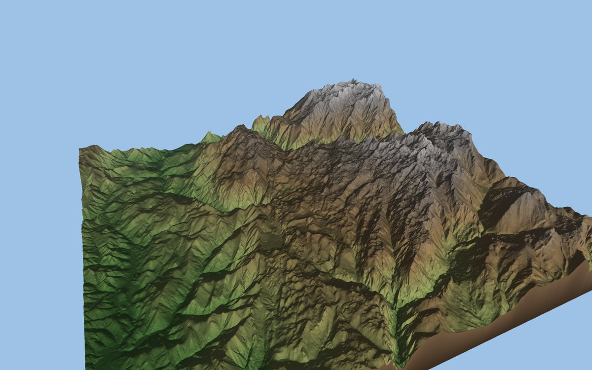
Tot el projecte comença amb una dada: l'altura del terra a cada punt. Aquesta dada ve en un model digital del terreny (MDT), una imatge on cada píxel, en lloc d'un color, guarda l'altitud en metres. Perquè sapiguem on és cada píxel, el fitxer porta la seva georeferència: les coordenades de la cantonada i la mida de cada píxel (5 m a Picos).
Aquestes coordenades no són latitud i longitud, sinó metres sobre una projecció, una manera d'aplanar un tros de la Terra. Espanya fa servir la UTM, que divideix el món en franges; la península n'ocupa tres. Per no barrejar-ne, treballem sempre en una sola, la UTM 30N (EPSG:25830).
Descarreguem el MDT del servei web de l'IGN, que retorna qualsevol zona en un sol fitxer. L'script la demana per trossos i els uneix. Demana el format de text ArcGrid perquè el format GeoTIFF del servei arrodoneix les altituds a metres enters i el relleu sortiria esglaonat.
Abans de dibuixar-lo, cal netejar-lo. El mar surt com a "sense dades" o com a 0 m, però també hi ha rius i platges a 0 m que són terra. Per distingir-los, considerem mar només les zones a 0 m que toquen la vora del mapa; els forats que queden dins de terra s'omplen amb la mitjana dels punts del voltant.
El programa carrega tota la península (200 m) i, com a zona de detall, la de 5 m que conté el punt d'observació: Picos de Europa (20 × 20 km, dins de la franja de totalitat, al Git), Vic i l'Escala (20 × 20 km) i el Vallès (31,7 × 28,5 km, amb Cerdanyola, la UAB i Montmeló). Les zones catalanes es descarreguen amb l'script a una carpeta que el Git ignora. Amb el Sol a 4° sobre l'horitzó, una serra a 30 km pot decidir si es veu o no: més enllà de la zona, el relleu és el de 200 m.
Fitxers: scripts/descarregar_mdt.py (descàrrega),
dades/data_io.py (lectura, neteja i memòria cau),
scripts/preparar_dades.py.
Criteris
- La península (200 m) i Picos (5 m) es carreguen i es dibuixen sobre la Terra (prova automàtica i captures).
- Cada font de
data/(MDT, CNIG, efemèrides, textures) té la procedència, la llicència i la comanda adata/FONTS.md(falten les sumes sha256). - Els MDT nous van a
data/mdt/zones/, que el Git ignora; Picos continua versionat (tasca 4.1). - Zones de 5 m del Vallès (Cerdanyola, UAB, Montmeló), de Vic i de l'Escala, carregades a la prova de les sis ubicacions (tasques 4.3 i 4.4, F10).
- Anell de 25 m fins a ~100 km al voltant del Vallès (tasca 4.3; ara hi ha el relleu de 200 m).
Limitacions: el servei de l'IGN només té Espanya (Portugal i França surten a 0 m, com si fossin mar). Els MDT d'Astúries i Luarca encara hi són però es retiraran (tasca 4.2). Els MDT ja pujats al Git es queden a l'historial.
O1.2 · Dades de l'eclipsi (CNIG) Llegir les dades oficials i posar-les sobre el terreny, sense confondre el que llegim amb el que calculem.
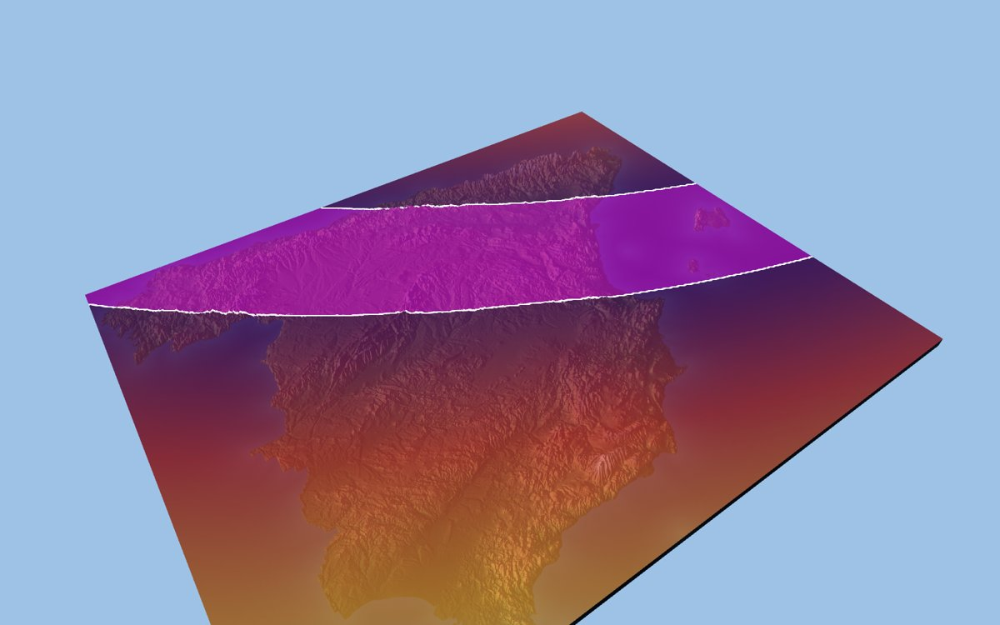
El CNIG publica, per a cada punt d'Espanya, les hores de les fases de l'eclipsi: quan la Lluna comença a tocar el Sol (C1), quan el tapa del tot (C2), el màxim, quan el Sol torna a aparèixer (C3) i quan la Lluna se'n separa (C4). Als Picos, per exemple: C1 a les 19:31:39, màxim a les 20:28:02 i C4 a les 21:20:55 (hora d'estiu), amb 100,4 segons de totalitat.
Hi ha dues coses que cal no barrejar. Una és quina part del Sol tapa la Lluna, l'enfosquiment. L'altra és si una muntanya tapa el Sol, l'ocultació pel relleu. El CNIG dona totes dues, però la segona només per al moment del màxim.
Aquestes dades venen en un altre sistema de coordenades (EPSG:3857). Per posar-les sobre el terreny cal reprojectar-les: per a cada píxel del terreny, calcular quin valor li toca. Si el valor és continu, com un percentatge o una hora, s'interpola entre els veïns. Si és una classe, com "el relleu tapa el Sol", s'agafa la del punt més proper, perquè fer la mitjana de dues classes no té sentit.
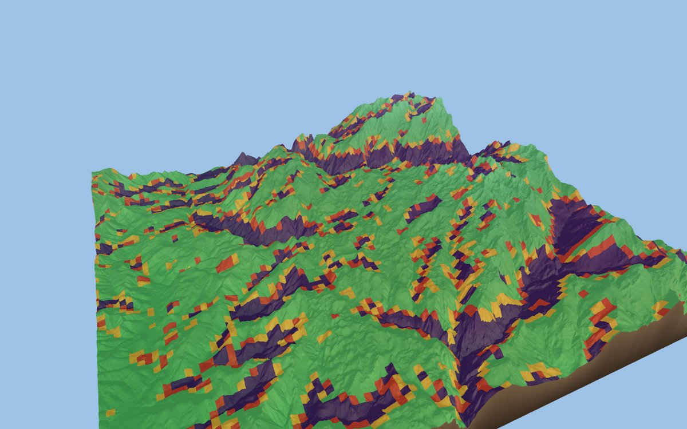
També importa la posta de Sol. A Catalunya, el Sol es pon abans que acabi l'eclipsi (C4 arriba després de la posta), de manera que el final no es veurà.
Els punts d'observació són llocs concrets: la plaça Major de Vic (41,9303, 2,2540), els ajuntaments de l'Escala (42,1248, 3,1322), Cerdanyola (41,4910, 2,1407) i Montmeló (41,5517, 2,2479) i la plaça Cívica de la UAB (41,5019, 2,1039). El punt de Picos (43,2620, −4,9490) és el centre de la zona de 5 m: és el cas de totalitat, sense un lloc concret.
Un detall que hem comprovat a la documentació del CNIG: l'elevació del Sol que publiquen inclou la refracció, és a dir, l'efecte de l'atmosfera, que fa que el Sol sembli una mica més alt del que és (veure O1.6).
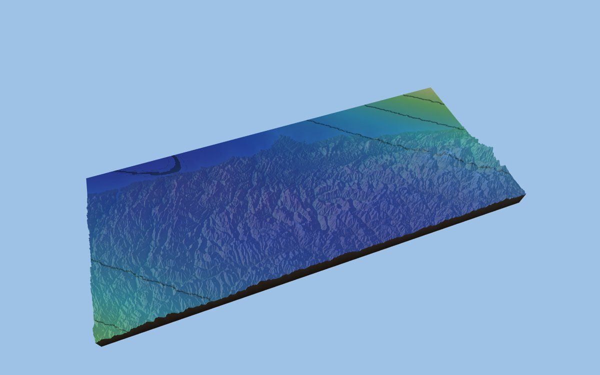
Fitxers: dades/eclipse_data.py
i data/eclipsi2026/LLEGENDA.md (què és cada banda i classe).
Criteris
- Al punt de Picos (43,262, −4,949) es llegeixen C1 19:31:39, màxim 20:28:02 i C4 21:20:55 CEST, i 100,4 s de totalitat.
- Convencions comprovades al document del CNIG (la banda 1 inclou la refracció).
- Coordenades dels punts concrets verificades el 26/10/2026 (tasca 0.3): ajuntaments amb el geocodificador de l'ICGC, que coincideix a menys de 20 m amb OpenStreetMap; places, amb el centre del polígon d'OpenStreetMap (l'ICGC hi dona el primer portal, a la vora). Els valors del CNIG no canvien (el píxel de ~920 m és el mateix).
Limitacions: les hores tenen píxels d'uns 920 m i les ombres, d'uns 230–300 m; les ombres no tenen en compte edificis ni arbres.
O1.3 · Terreny 3D i aspecte visual Dibuixar el relleu a escala real, sobre la forma real de la Terra.
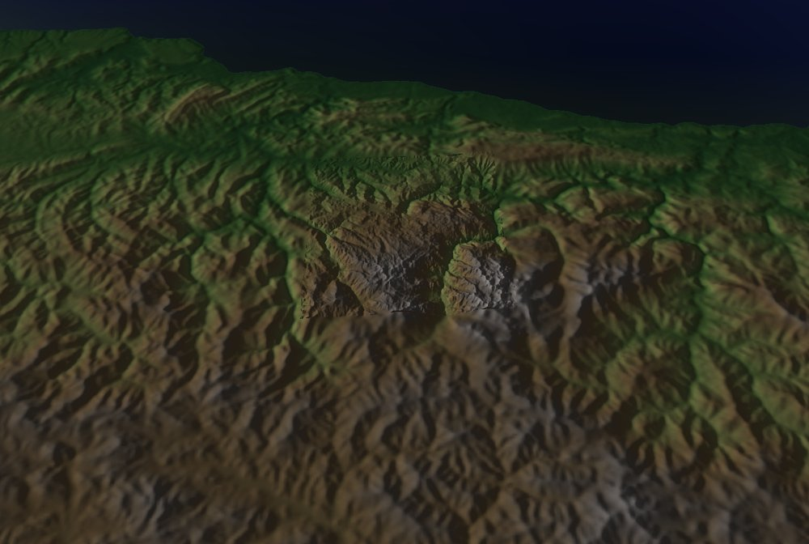
El relleu es dibuixa a partir d'una graella que la GPU aixeca fins a l'altura de cada punt (O2.3). Ara la graella no és plana: cada vèrtex es col·loca a la seva latitud i longitud reals sobre l'el·lipsoide, la forma lleugerament aixafada amb què es mesura la Terra. Per tant, la curvatura és la real i no cal cap correcció a part.
El relleu té nivells de detall: més vèrtexs a prop de l'observador i menys lluny. De lluny a prop: tota la península (un vèrtex cada ~1 km); la península a 200 m en ~100 km al voltant del punt d'observació; la zona de 5 m que conté el punt (Picos, Vic, l'Escala o el Vallès, un vèrtex cada ~20 m); i, en ~2,5 km al voltant del punt, un vèrtex per cada píxel de 5 m. Cada nivell fa un forat al de sota, i a la seva vora l'altura passa suaument a la del nivell de sota perquè no hi hagi esglaons. On el mapa de l'IGN no té dades (Portugal, França, el mar lluny de la costa) no es dibuixa relleu i es veu la Terra de sota; a les zones de la costa, el mar es dibuixa a 0 m i, cap a la vora, pren el color del globus.
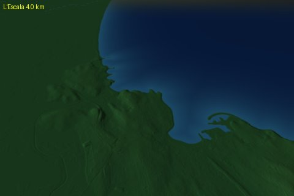
Els colors depenen de l'altitud en metres (verd a baix, roca i neu a dalt) i la boira augmenta amb la distància. Quan la Lluna tapa el Sol, la llum de cada punt baixa segons la part del Sol que es veu des d'aquell punt (O1.8).
Fitxers: basecode/terrain.py (mode globus), terrain.vert, terrain.frag.
Criteris
- El relleu es posa sobre l'el·lipsoide; el picking cau a 0,01 m de la superfície dibuixada (prova automàtica).
- Zones de 5 m de Picos, Vic, l'Escala i el Vallès, amb pegats de detall al voltant de l'observador (F10).
- Els nivells encaixen sense línies ni salts visibles des de 0,4, 4, 30 i 250 km (inspecció de captures).
- L'horitzó llegit de la imatge (depth buffer, zoom de 2°) coincideix amb el calculat sobre els triangles dibuixats a ≤ 0,006° a les sis ubicacions, en l'azimut del Sol al màxim (
scripts/validar_horitzo.py; objectiu 0,05°). - Pujant fins a 20.000 km, cada píxel cau sobre la superfície dibuixada i cap no es veu per sota (sense forats entre nivells ni l'interior del globus), a les sis ubicacions (
scripts/prova_vistes.py).
Limitacions: el geoide no es corregeix (~50 m); entre la zona de 5 m i els ~100 km el relleu és el de 200 m; fora del pegat de ~2,5 km la malla de la zona té un vèrtex cada ~20 m, i l'horitzó d'una carena a 1–6 km pot quedar fins a 0,07° més baix que el del MDT complet (UAB, Cerdanyola, Vic); fora d'Espanya no hi ha relleu; només es manté carregada la zona de 5 m de l'observador.
O1.4 · Exploració de l'escena Moure's lliurement del terreny fins a l'espai.
La càmera d'exploració és lliure. Amb el ratolí o les fletxes es gira la mirada; amb W A S D es mou endavant, enrere i als costats; amb E i Q puja o baixa; i la roda (o lliscar amb dos dits al trackpad) l'acosta o l'allunya en la direcció en què mira. Allunyar-se mou la càmera de debò: no és un zoom.
Perquè es pugui explorar tant una vall com la Terra sencera, la velocitat és proporcional a l'altura sobre el terra: a 3,5 km d'altura es va a uns 2,6 km/s, i a 27.000 km, a més de 20.000 km/s. La roda també: cada pas multiplica l'altura per 1,35 (o la divideix), de manera que a prop del terra és precisa i a l'espai és ràpida; del terra a 20.000 km calen ~30 passos (abans, ~90). Endavant, la càmera s'acosta al terra cada vegada més a poc a poc i no el travessa.
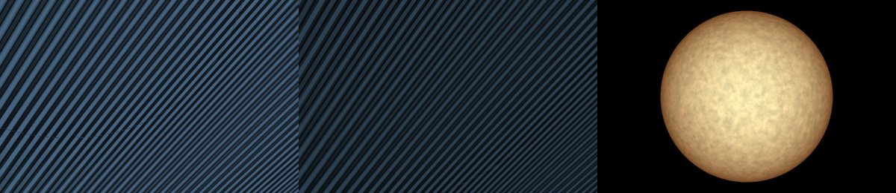
L'espai de navegació és un cub fix que conté la Terra, la Lluna i el Sol durant tot l'interval de la barra de temps, calculat amb les posicions reals: no s'acosta cap astre. Fa 246.438.601 km de costat (1,647 UA), en el mateix sistema que l'escena (ECEF). És més d'1 UA perquè, en coordenades que giren amb la Terra, el Sol fa ~112° de volta al voltant de la Terra entre les 14:00 i les 21:30 TU. El marge, d'1,613 radis solars, és el necessari perquè, des de la paret de darrere del Sol, el disc hi càpiga sencer (un radi solar no n'hi havia prou: el Sol hauria fet 60°). A la paret només s'atura el moviment cap a fora: cada coordenada es retalla per separat, i el moviment paral·lel continua sense rebots. A prop de la paret se'n veuen les ratlles translúcides.
Amb un doble clic sobre el terreny es tria el punt d'observació. Per saber quin punt hi ha sota el cursor, es llegeix la profunditat d'aquell píxel i es desfà el camí fins al món (O2.2). La càmera i el punt d'observació són independents: explorar no mou l'observador, i el doble clic no mou la càmera. Quan es tria una ubicació de la llista, en canvi, la càmera d'exploració es posa a sobre del lloc nou, perquè en passar a explorar (V) es parteixi d'allà i no del lloc anterior (correcció 11.2).
Fitxers: basecode/camera_exploracio.py, teclat() i punt_sota_cursor() a main.py.
Criteris
- La roda allunya la càmera de 3,5 km a ~27.000 km sense canviar el camp de visió (prova automàtica).
- La velocitat s'adapta a l'altura: ~2,6 km/s a 3,5 km i ~21.000 km/s a 27.000 km (prova automàtica).
- A l'espai, reprendre el temps (P) no mou ni gira la càmera d'exploració; canviar d'ubicació amb un doble clic tampoc (prova automàtica, sis ubicacions).
- Prova de l'equip (26/10): l'exploració comença a la ubicació triada (Vic); en pausa, l'hora no canvia mentre es mou la càmera; a l'espai, P reprèn el temps sense moure-la.
- Cub de navegació: a les sis cares, el teclat, la roda i les posicions posades pels botons s'aturen al límit sense rebots i el moviment paral·lel continua; el Sol hi cap sencer des de totes les parets (
scripts/prova_controls.py, F12). - Roda adaptada a l'escala: del terra a 20.000 km amb 28–30 passos; un gest molt ràpid es limita a 3 passos per fotograma (prova automàtica).
- Orientar-se a l'espai: l'equip s'hi perdia. Ara el cub limita fins on es pot anar; falta que l'equip ho torni a provar.
- Prova de l'equip amb el ratolí i el trackpad físics (F12: paret del cub, roda, dos dits).
O1.5 · Observació des del terra Mirar el cel des d'un punt concret, a 1,7 m sobre el terra, on el relleu pot tapar el Sol.
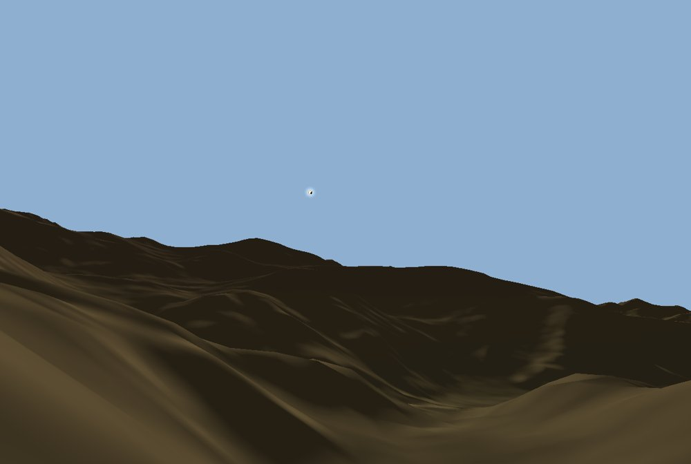
La càmera d'observació és als ulls d'una persona, 1,7 m sobre el terra. Els ulls no es mouen: només es gira el cap, amb el ratolí o les fletxes, i la mirada es queda on la deixem. El Sol no se segueix sol: si surt de la vista, cal tornar-lo a buscar. La roda fa de prismàtics.
La ubicació de l'observador és una dada (latitud, longitud i altitud), separada de la càmera i de qualsevol dibuix. Es tria de la llista del panell o amb un doble clic a l'exploració, i en aquell moment es calculen alhora el model del Sol i la Lluna i les dades del CNIG del panell. Mentre es reprodueix l'eclipsi, el punt queda bloquejat.
Mirar amb el ratolí. Un clic a l'escena captura el ratolí, com en
un joc en primera persona: el cursor s'amaga i moure el ratolí gira el cap sense prémer cap botó (els ulls
no es mouen). Esc l'allibera per tornar a fer servir el panell, i perdre el focus de la
finestra també. GLFW ho fa amb el mode CURSOR_DISABLED: el cursor queda lligat a la
finestra i la seva posició "virtual" no té límits, de manera que no topa mai amb la vora; el que gira la
mirada és la diferència entre dos fotogrames (moviment relatiu). Un clic espera 0,3 s abans de capturar:
si n'arriba un segon, és un doble clic i serveix per triar el punt.
El programa arrenca pausat una hora abans de l'inici de l'eclipsi (C1 del model) a Picos, a les 18:31:39 (hora d'estiu). Canviar d'ubicació no toca l'hora.
El temps també és independent: P només el congela o el torna a posar en marxa. Es pot observar, prémer P, sortir a l'espai, i prémer P de nou: l'eclipsi continua des del mateix instant.
Fitxers: dades/observador.py, triar_punt(), ulls() i reproduir_pausar() a main.py, basecode/camera_observador.py.
Criteris
- Els ulls i la mirada no canvien en reproduir (prova automàtica).
- A les sis ubicacions, els ulls són a 1,698–1,700 m dels triangles dibuixats, llegit del depth buffer mirant avall; mirant a −30° i −60° tot és terreny proper (
scripts/prova_vistes.py). - P congela el temps i el reprèn des del mateix instant sense moure cap càmera (prova automàtica).
- Durant la reproducció no es pot canviar el punt; en pausa sí, i el model i el panell són del punt nou (prova automàtica).
- La seqüència sencera amb el bucle real del programa i el panell dibuixat, amb el teclat i el ratolí simulats: triar Cerdanyola, observar, girar amb les fletxes i arrossegant, P, V i roda fins a ~36.000 km, P a l'espai, tornar al punt amb els mateixos ulls i la mateixa mirada (
scripts/prova_vistes.py). - Arrencada pausada exactament a C1 − 1 h (18:31:39 a Picos); canviar d'ubicació no canvia l'hora (prova automàtica, F12).
- Ratolí capturat: el moviment relatiu gira la mirada, sense moviment no canvia, la inclinació es limita a ±89°, tornar a capturar no fa salts, perdre el focus i Esc alliberen, el panell no mou la càmera (prova automàtica amb el moviment simulat; la captura real del cursor no es pot provar sense focus).
- Prova de l'equip del ratolí capturat (clic, Esc, Cmd+Tab, doble clic).
- Prova de l'equip (26/10): a Vic, el terreny és correcte mirant al voltant i cap avall, la mirada es queda fixa reproduint i Tornar al punt d'observació torna al lloc correcte; a Picos, la seqüència completa funciona; Cerdanyola, Montmeló i la UAB, sense problemes.
Què vam aprendre (F10): la prova anterior deia que els ulls eren a 1,7 m, però comparava amb l'altura que calculava la CPU, no amb el que es dibuixava. Mesurat al depth buffer, a Montmeló eren a 122 m. Ara l'altura de cada vèrtex la calcula la CPU i la GPU la rep feta: totes dues parlen dels mateixos triangles. Al punt de l'observador, la superfície dibuixada coincideix amb el MDT original a menys d'1 cm.
O1.6 · El Sol Saber on és el Sol a cada moment i dibuixar-lo al seu lloc del cel.
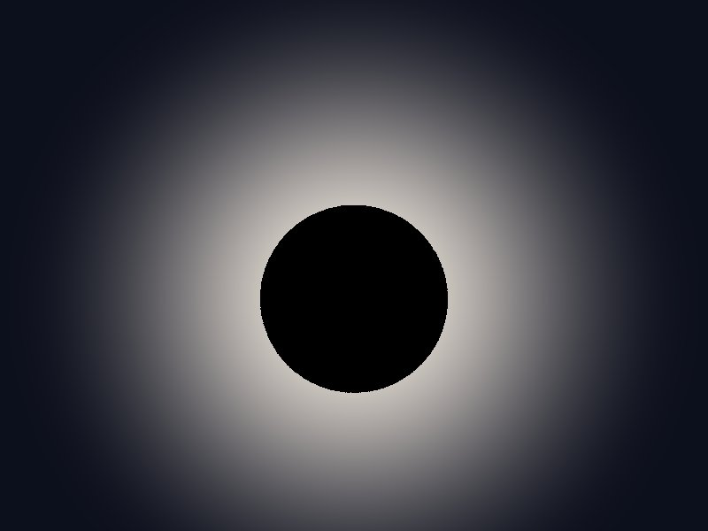
La posició del Sol surt de les efemèrides de JPL Horizons (NASA): una taula amb la posició del Sol i la Lluna cada minut. Aquestes posicions es donen en un sistema fix respecte de les estrelles, i el programa les fa girar amb la Terra (precessió, nutació i rotació) per tenir-les en el sistema dels mapes. Des de qualsevol punt, la direcció cap al Sol dona l'azimut (des del nord) i l'elevació (sobre l'horitzó).
Per a l'elevació que es mostra s'afegeix la refracció: l'atmosfera corba la llum i el Sol sembla més alt (uns 0,57° a l'horitzó). El resultat queda a menys de 0,02° de l'elevació del CNIG als 9 punts provats.
El Sol es dibuixa a la seva distància i mida reals. La vora és més fosca que el centre (enfosquiment del limbe, un efecte real) i la superfície té una granulació animada, que és il·lustrativa.
Fitxers: dades/efemerides.py, dades/geodesia.py, basecode/astres.py, esfera.frag.
Criteris
- Elevació del Sol al màxim a ≤ 0,017° del CNIG als 9 punts, sense ajustar-s'hi (scripts/validar_model.py).
- El nord és el geogràfic: l'escena és en coordenades terrestres (resolt el gir de 1,3°–4,1° de la quadrícula UTM).
- Elevació geomètrica i azimut del Sol al màxim a ≤ 0,005° del calculador de la NASA als 9 punts (
scripts/comparar_nasa.py).
Limitacions: la granulació del Sol, el halo i la corona són il·lustratius.
O1.7 · La Lluna Fer passar la Lluna per davant del Sol al ritme real de l'eclipsi.
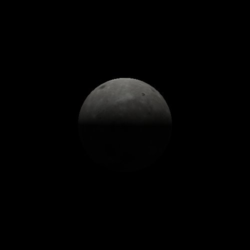
La Lluna també surt de les efemèrides de JPL, al seu lloc i a la seva mida reals. Des de cada punt de la Terra, el Sol i la Lluna es veuen com dos discs, i la part del Sol tapada és l'àrea on se solapen. Les hores de l'eclipsi (C1 inici, C2 i C3 totalitat, C4 final) surten d'aquesta geometria.
Abans, la Lluna feia una recta ajustada a les hores del CNIG i l'inici i el final sortien 100 segons tard. Ara, sense fer servir cap hora del CNIG, totes les hores queden a menys de 1,2 segons de les seves als 9 punts provats. Com que el model no s'ajusta al CNIG, això és una comprovació independent.
Des de terra, la Lluna nova només es veu on tapa el Sol (la resta del cel és més brillant que ella). Des de l'espai es veu sencera, amb la cara de dia il·luminada.
Fitxers: dades/model_eclipsi.py, basecode/astres.py.
Criteris
- C1, C2, màxim, C3 i C4 a ≤ 1,2 s del CNIG als 9 punts; part tapada a ≤ 0,05 punts (scripts/validar_model.py).
- Contactes a 2,0–3,9 s dels de la NASA als 9 punts, amb la mateixa convenció (observador a 0 m); part tapada a ≤ 0,02 punts (
scripts/comparar_nasa.py, O1.12).
Limitacions: la vora de la Lluna és un cercle (sense muntanyes, ~1–3 s als contactes); l'orientació de la textura és aproximada.
O1.8 · La llum i l'ombra de la Lluna Que cada punt de la Terra s'enfosqueixi segons la part del Sol que hi tapa la Lluna.
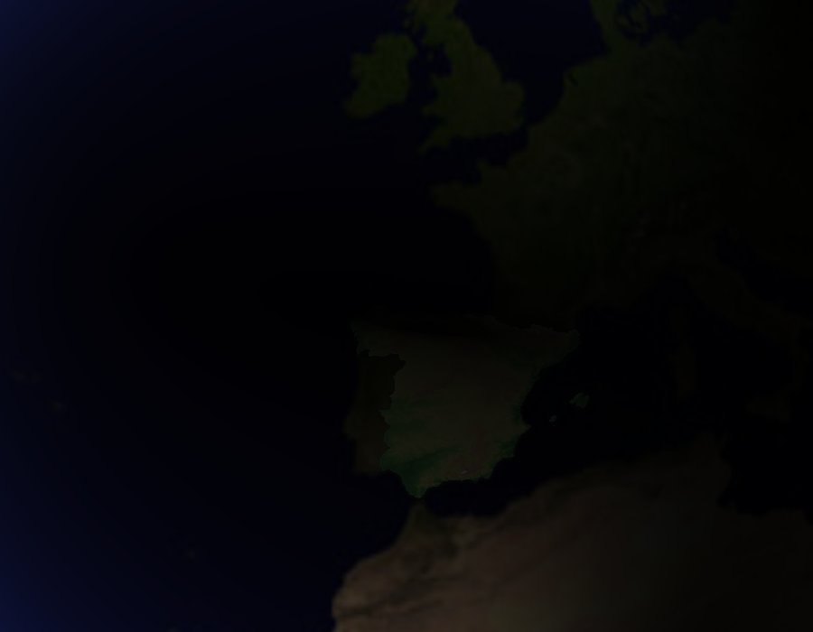
L'ombra de la Lluna no s'enganxa a la Terra: per a cada punt del terreny i del globus, el shader calcula quina part del Sol tapa la Lluna vista des d'aquell punt, amb la mateixa fórmula que el model. On la tapa del tot (la umbra) és fosc; al voltant (la penombra), la llum baixa a poc a poc; i la resta de la cara de dia continua il·luminada. És diferent de les ombres de les muntanyes (O1.9): l'ombra de la Lluna redueix la llum directa del Sol a tota una regió; la d'una muntanya la treu del tot en un tros concret de terreny.
Hem comprovat que l'eix de l'ombra cau dins de la umbra que publica el CNIG en tots els instants comparats. El color del cel depèn de la posició de la càmera (altura del Sol i part tapada) i es fa negre per sobre de l'atmosfera; aquest cel és una aproximació visual.
Fitxers: terrain.frag i terra.frag (tapat_des_de), actualitzar_cel() a main.py, scripts/validar_ombra.py.
Criteris
- L'eix de l'ombra cau dins de la umbra del CNIG de 18,338 a 18,518 h TU (scripts/validar_ombra.py).
- A la totalitat, el terra s'enfosqueix (brillantor de 84 a 1 a la prova automàtica).
Limitacions: el cel, el halo, la corona i el contorn blau de l'atmosfera són il·lustratius.
O1.9 · Ombres del relleu Que les muntanyes facin ombra i puguin tapar el Sol, i comparar-ho amb el CNIG.
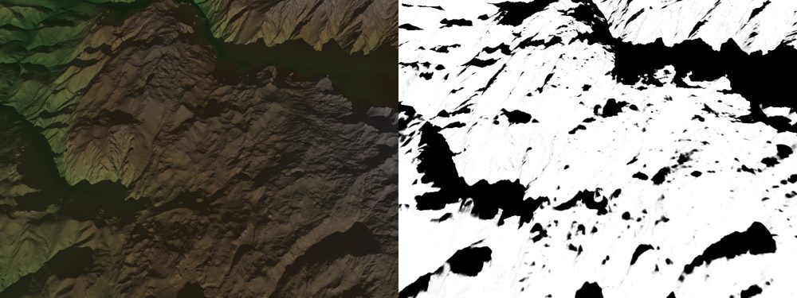
Cal distingir tres coses: l'ombra de la Lluna (la Lluna tapa part del Sol a tota una regió, O1.8); l'ombra del relleu (una muntanya tapa el Sol a un tros de terreny, aquest apartat); i l'ocultació del Sol pel relleu vista des de l'observador (si l'horitzó és més alt que el Sol, O1.5). Les dues últimes són la mateixa geometria vista des de punts diferents: un punt del terreny és a l'ombra si, des d'allà, el relleu tapa el Sol.
Les ombres del relleu es fan amb shadow mapping (O2.5) dins de la zona de 5 m de l'observador. La llum ve del Sol aparent, amb la refracció, com el CNIG. Només bloqueja la llum directa del Sol: la del cel continua arribant. Es pot apagar a Avançat per comparar.
Comprovació en dos passos (scripts/validar_ombres_relleu.py --totes). Primer, la GPU
contra un càlcul independent de la CPU: per a ~1.150 píxels de cada zona, un raig des del punt cap al
Sol mira si el terreny dibuixat el tapa. Coincideixen tots, llevat dels casos dins del biaix conegut de
la GPU (obstacles de menys de ~12 m per sobre del raig, 4–17 % dels punts). Segon, contra la capa
d'ombres del CNIG, que diu el mateix (si el centre del Sol arriba al terra) per a cel·les de ~230 m a
l'hora del màxim: amb el nostre MDT de 200 m, comparable al GMTED2010 del CNIG, coincideixen el 74 %
(Picos) i el 79–95 % (Catalunya) de les cel·les en 6 km al voltant del punt. Treure la refracció hi
canvia ±1 punt, així que no n'és la causa; la diferència ve dels dos MDT i de la mida i la posició de
les cel·les. Amb el MDT de 5 m trobem el doble de cel·les tapades: ombres petites que el CNIG no pot
resoldre.
Fitxers: basecode/ombres_relleu.py, ombra.vert, ombra.frag, llum_relleu() a terrain.frag, scripts/validar_ombres_relleu.py, scripts/validar_horitzo.py.
Criteris
- Shadow mapping a la zona de 5 m: la GPU i el raig de la CPU coincideixen a totes sis ubicacions, fora del biaix calculat (11,6–12,7 m).
- Comparat amb la capa d'ombres del CNIG a l'hora del màxim: 74–95 % de cel·les iguals amb el MDT de 200 m; diferències explicades per la resolució.
- Ocultació del Sol pel relleu des de l'observador al màxim: classe 3 (no el tapa) a Vic, Cerdanyola, Montmeló i la UAB, com el CNIG; a l'Escala, el terreny a 100 m de l'ajuntament fa un horitzó de 6,4° que el tapa (el CNIG, amb cel·les de ~230 m, diu 3); a Picos, classe 3 contra 1 del CNIG (
scripts/validar_horitzo.py). - Prova de l'equip (26/10): a l'Escala, al màxim, el relleu tapa el Sol.
- L'interruptor d'Avançat encén i apaga les ombres totes les vegades, també en pausa (correcció 11.7; prova automàtica a les sis ubicacions).
- Prova de l'equip de l'interruptor d'Avançat (26/10, segona prova, després de la correcció 11.7): ara funciona. A la primera prova només funcionava la primera vegada.
Limitacions: només la zona de 5 m projecta i rep ombres (en 16 km al voltant del punt); obstacles de menys de ~12 m no fan ombra (el biaix que evita l'acne); sense edificis ni arbres; el mapa té texels d'~8 m.
O1.10 · Interfície i barra de temps Controlar el temps i triar què es mira, amb un panell senzill.
El panell només té el necessari: reproduir o pausar, l'hora i la velocitat; explorar o observar des del terra; el punt d'observació (una llista d'ubicacions i Tornar al punt d'observació) i una ajuda curta. Les capes tècniques del CNIG i les eines de depuració són a Avançat, tancat per defecte. La barra de temps, a baix, permet arrossegar l'hora de 16:00 a 23:30 (hora d'estiu).
L'ajuda del panell explica com entrar i sortir del control de la mirada (clic a l'escena / Esc) i indica quan el ratolí està capturat. Mentre ho està, el panell no rep el ratolí.
És una interfície "immediata" (slimgui): a cada fotograma es torna a construir a partir de les variables del programa. Les hores es calculen en temps universal (TU) i es mostren en hora d'estiu (CEST = TU + 2).
Fitxers: ui.py.
Criteris
- Panell i barra de temps funcionen amb la finestra (prova de l'equip, versió anterior).
- Prova de l'equip del panell nou.
Limitacions: la font de slimgui no mostra bé els accents. El gest de pessigar
del trackpad no arriba al programa: la biblioteca GLFW que fem servir a macOS implementa el lliscament amb
dos dits (scrollWheel:) però no el pessic (magnifyWithEvent:); l'alternativa és
lliscar amb dos dits. El pessic natiu necessitaria una llibreria nova (PyObjC). Amb el ratolí lliure, Esc
tanca el programa, com abans.
O1.11 · Condicions meteorològiques Poder triar entre dia clar, boira i núvols.
Encara no està fet. La boira per distància que ja té el terreny es podrà aprofitar com a punt de partida.
- Menú de condicions meteorològiques (tasca 6.2).
O1.12 · Validació del model Saber quant s'equivoca el model de l'eclipsi, i per què.
Que un model coincideixi amb les dades amb què s'ha construït no demostra gaire: això és un ajust. Una comprovació independent el compara amb dades que no ha fet servir. El model nou no fa servir cap hora del CNIG (només les posicions de JPL i la geometria), de manera que la comparació amb el CNIG és independent.
Resultats amb el CNIG: als 9 punts, totes les hores a ≤ 1,2 s, la part tapada a ≤ 0,05 punts i l'elevació del Sol a ≤ 0,017°; i l'eix de l'ombra, dins de la umbra del CNIG.
Segona font: el calculador de circumstàncies locals de la NASA (Espenak). En lloc de fer clic al
mapa, l'script executa el mateix codi JavaScript de la pàgina (SEcirc.js) amb les nostres
coordenades i en desa els resultats sense arrodonir. Abans de comparar, cal posar-se en les seves
convencions: observador a 0 m, elevació sense refracció i ΔT (la diferència entre el temps dels
càlculs astronòmics i el TU) de 71,4 s. Amb aquestes condicions, elevació i azimut coincideixen a
≤ 0,005°, la part tapada a ≤ 0,02 punts i totes les hores del model queden 2–4 s darrere de les de la
NASA, a tots els punts per igual (el CNIG també, 2–4 s).
Per què? Una diferència igual a tot arreu apunta a l'escala de temps. La petita variació entre contactes (+3,1 s a C1, +2,0 s a C4) té el patró d'un radi de la Lluna diferent: la NASA en fa servir dos (un per a C1 i C4 i un altre més petit per a C2 i C3), i nosaltres un de sol. Repetint el càlcul amb els radis de la NASA, tots els contactes queden a +2,5 ± 0,2 s: el que queda és constant, i és el que donaria un ΔT de 68,9 s a les efemèrides de JPL en lloc dels 71,4 s previstos per la NASA quan va fer el mapa. És compatible amb el valor actual del ΔT (~69 s), però no l'hem pogut llegir de Horizons. No hem ajustat el model: totes dues diferències són per sota de l'objectiu de 5 s.
Fitxers: scripts/validar_model.py, scripts/validar_ombra.py, scripts/comparar_nasa.py i data/nasa/circumstancies_nasa.csv, seccions 6, 7 i F9 del pla.
Criteris
- Comparació independent amb el CNIG a 9 punts: hores a ≤ 1,2 s.
- L'ombra del model cau dins de la umbra del CNIG.
- Font externa triada i convencions documentades (NASA).
- Comparació amb la NASA als 9 punts i a tots els contactes, amb les mateixes convencions: hores a 2,0–3,9 s, elevació i azimut a ≤ 0,005° (
scripts/comparar_nasa.py, tasca 3.8). - Diferència explicada: radi de la Lluna (±0,6 s) i ΔT (2,5 s constants); sense ajustar el model.
O1.13 · La Terra vista des de l'espai Un sol model en què es pot passar del terra a l'espai i veure la Terra, el Sol i la Lluna al seu lloc.
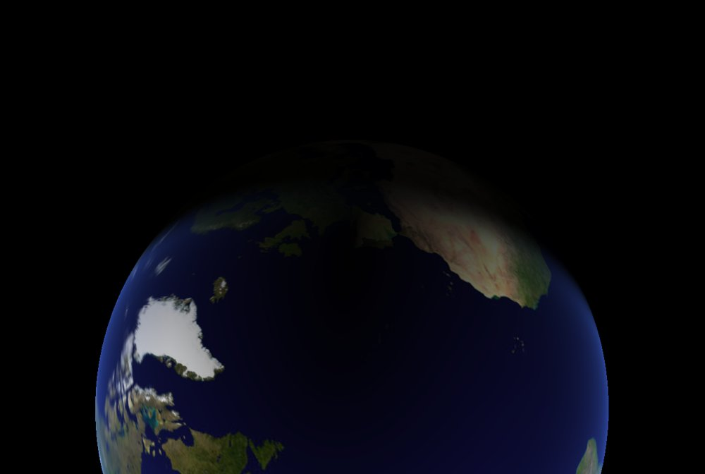
Per poder canviar de punt de vista, tota l'escena viu en un sol sistema de coordenades terrestres (ECEF): l'origen al centre de la Terra i els eixos fixos amb ella, en quilòmetres. La Terra és l'el·lipsoide WGS84 amb una textura de la NASA, il·luminada pel Sol (dia i nit) i amb l'ombra de la Lluna; la península i Picos s'hi posen al seu lloc; i el Sol i la Lluna són a la seva posició i mida reals.
Això vol dir distàncies enormes: el terra a un metre i el Sol a 150 milions de km. Per dibuixar-ho tot alhora calen dues tècniques (O2.2): tot es dibuixa relatiu a la càmera, i la profunditat és logarítmica.
El botó Veure l'ombra des de l'espai porta la càmera a 12.000 km, entre la vertical i el Sol, mirant el punt on l'ombra és més fosca a l'hora actual; és un sol enquadrament, sense seguiment. L'ombra real es distingeix poc: a Espanya l'eclipsi passa a prop de la posta, l'ombra cau a prop del límit entre el dia i la nit i sovint sobre el mar fosc, la umbra només fa ~290 km i la penombra enfosqueix a poc a poc. La casella Ressaltar l'ombra amb línies (didàctic) hi dibuixa les línies del 25, 50 i 75 % del Sol tapat i el límit de la totalitat, sense canviar la foscor.
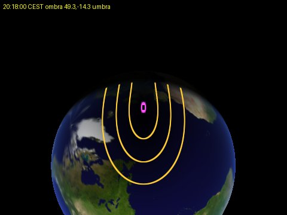
A escala real, la Lluna és a 60 vegades el radi de la Terra: des d'on es veu bé l'ombra, la Lluna queda lluny, i des d'on es veuen totes dues, l'ombra és massa petita per distingir-la. No hem fet cap composició il·lustrativa amb distàncies falses.
Fitxers: basecode/terra.py, main.py (veure_ombra_des_de_lespai), punt_ombra() a dades/model_eclipsi.py.
Criteris
- La Terra, la península, Picos, el Sol i la Lluna es dibuixen junts del terra fins a l'espai (inspecció de captures).
- "Veure l'ombra des de l'espai" posa al centre el punt més fosc de l'ombra, a ≤ 7 km (prova automàtica, sis ubicacions).
- Prova de l'equip amb la finestra.
Limitacions: la malla del globus queda fins a ~120 m per sota de l'el·lipsoide entre vèrtexs; fora d'Espanya no hi ha relleu.
O2 · Conceptes d'informàtica gràfica
Objectiu 2 de l'acta 3: entendre com funcionen les tècniques de l'assignatura aplicant-les al projecte. Referència: Python & OpenGL for Scientific Visualization (N. Rougier), que fa servir altres llibreries però els mateixos conceptes.
O2.1 · Com es dibuixa un fotograma
El camí des de python main.py fins a una imatge a la pantalla.
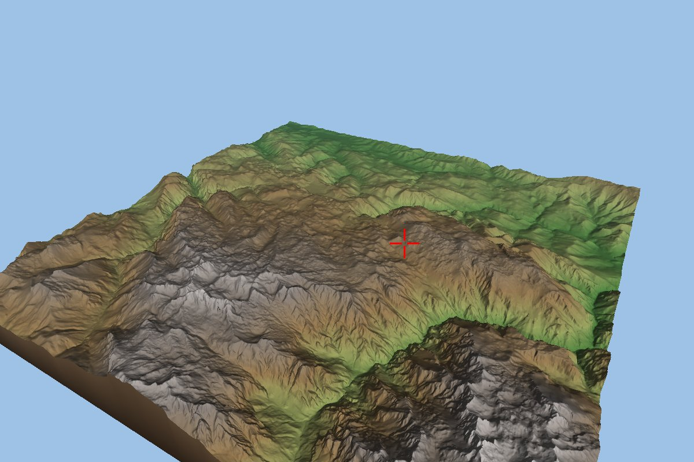
En executar el programa, el codi de classe obre una finestra i demana a l'ordinador un
context OpenGL, l'espai de treball de la targeta gràfica. Després, el nostre
on_init() hi crea els objectes: el terreny, el Sol, la Lluna...
Cada objecte puja a la targeta gràfica les dades dels seus punts, els vèrtexs, en un VBO (un bloc de memòria de la GPU). Sovint també hi puja una llista que diu quins vèrtexs formen cada triangle, l'IBO, que estalvia repetir vèrtexs. El VAO descriu com s'han de llegir aquestes dades, i el programa són dos petits codis que s'executen a la GPU: el vertex shader, que col·loca cada vèrtex a la pantalla, i el fragment shader, que decideix el color de cada píxel.
A cada fotograma, la càmera calcula les seves matrius i les envia a tots els objectes; cada objecte es dibuixa, i al final la imatge, que s'ha dibuixat amagada, es mostra de cop (el doble buffer).
Cal distingir tres coses. Un vèrtex és un punt de la malla: el terreny en té 1024 × 1024. Un fragment és un candidat a pintar un píxel: la GPU en genera un per cada píxel que cobreix un triangle, amb valors barrejats dels seus tres vèrtexs. Un píxel és una casella de la imatge final, que es queda el fragment més proper a la càmera.
Per comprovar que ho enteníem, vam agafar un vèrtex del terreny, vam fer a mà tots els càlculs de la GPU i vam predir en quin píxel sortiria. La predicció va coincidir amb la imatge (exercici 1.0).
Fitxers: basecode/engine.py (bucle),
main.py, basecode/terrain.py,
scripts/exercici_fotograma.py.
Criteris
- Un vèrtex seguit a mà fins al píxel coincideix amb el que dibuixa la GPU (exercici 1.0).
O2.2 · Càmeres i transformacions Com un punt del món acaba en un lloc concret de la pantalla.
Per passar d'un punt del món (en quilòmetres) a un píxel, el vertex shader el multiplica per tres
matrius, que són una manera compacta d'escriure "mou, gira i escala". La primera,
m_model, col·loca l'objecte al món. La segona, m_view, recol·loca el món
com el veu la càmera: la càmera queda al centre mirant endavant. La tercera, m_proj,
prepara la perspectiva.
Després la GPU divideix pel valor w, que en aquesta projecció és la profunditat del punt segons la direcció en què mira la càmera (no la distància en línia recta). És aquest pas el que fa que el que és lluny es vegi petit. A l'exercici 1.0, en acostar la càmera a la meitat de distància, un punt al costat de la imatge es va allunyar del centre de la pantalla 2,14 vegades.
La càmera també té dos límits, el pla proper (near) i el llunyà (far): només es dibuixa el que queda entre tots dos. Si la relació entre ells és massa gran, la GPU no distingeix bé quina superfície és davant i les llunyanes parpellegen (z-fighting). Per això la càmera els ajusta segons la distància al terreny: el pla proper va de 2 m a Picos a desenes de quilòmetres quan veiem tota la península.
Precisió i parets (F12). Les cares del cub de navegació fan 2,5·10⁸ km. Amb
nombres de 32 bits, la posició d'un punt de la cara interpolada entre vèrtexs tan llunyans s'equivoca
desenes de km. El fragment shader de la paret no la fa servir: reconstrueix el punt com la intersecció
del raig de la càmera (la direcció sí que és precisa) amb el pla, la distància al qual es calcula a la CPU
en doble precisió. I, mentre provàvem, vam veure que ctx.depth_mask no existeix a ModernGL 5
(la màscara de profunditat és de cada framebuffer): el halo del Sol escrivia profunditat.
El mateix càlcul, desfet al revés, serveix per saber quin punt del terreny hi ha sota el cursor: es llegeix la profunditat d'aquell píxel i es multiplica per les matrius inverses.
A l'escena de la Terra apareixen dos problemes de precisió. La GPU treballa amb nombres de 32 bits, que a 6.400 km del centre de la Terra només distingeixen mig metre. Per això la CPU calcula totes les posicions en doble precisió i a la GPU li arriba cada objecte relatiu a la càmera: a prop de la càmera els nombres són petits i precisos. L'altre problema és la profunditat: amb el terra a un metre i el Sol a 150 milions de km, la profunditat normal no té prou precisió. La profunditat logarítmica guarda el logaritme de la distància, de manera que la precisió relativa és la mateixa a totes les distàncies.
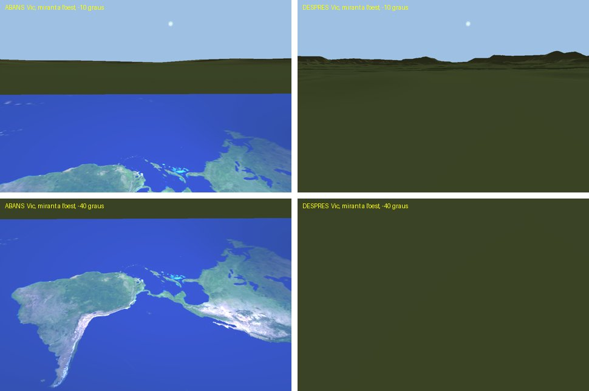
Una lliçó del retall (F10). Abans de dividir per w, la GPU
retalla (clipping) els triangles que surten del volum de la càmera, i ho fa interpolant
les coordenades linealment entre els vèrtexs. Nosaltres escrivíem la profunditat logarítmica
a gl_Position.z de cada vèrtex. El logaritme no és lineal: en un triangle gran que passa
per darrere de la càmera, la z interpolada es feia massa gran i la GPU en retallava un tros que era
davant dels ulls. A la península, amb vèrtexs cada ~1 km, a Vic desapareixia el terra fins a una
dotzena de metres i es veia l'interior del globus. Ara gl_Position.z és la que dona la
matriu de projecció (lineal, el retall és correcte) i la profunditat logarítmica només la posa el
fragment shader (gl_FragDepth).
Fitxers: basecode/camera_exploracio.py
(matrius(), desprojectar()), basecode/camera_orbital.py (mode pla),
basecode/camera_observador.py.
Criteris
- Cada etapa (vista, perspectiva, divisió per w, píxel) es calcula a mà i coincideix (exercici 1.0).
- Amb la càmera a la meitat de distància, el punt s'allunya del centre segons la raó de profunditats (2,14).
- Mirant avall des de les sis ubicacions, cap píxel de la meitat de baix és cel o globus (prova automàtica, F10).
O2.3 · Textures i relleu Com una imatge plena d'altures es converteix en muntanyes.
El terreny comença com una graella plana de 1024 × 1024 vèrtexs. Per donar-li relleu, el vertex shader consulta una textura que guarda l'altura del sòl en metres i puja cada vèrtex fins a aquella altura. Una textura no ha de ser una imatge de colors: aquí és una taula de números que la GPU sap llegir molt de pressa.
L'avantatge és que el cost de dibuixar no depèn de la mida del fitxer: el mapa de la península té més de 24 milions d'altures, però sempre es dibuixen els mateixos 1024 × 1024 vèrtexs. A més, per exagerar el relleu només cal canviar un número que s'envia al shader.
Com que hi ha moltes més altures que vèrtexs, cada vèrtex ha de resumir les altures del seu voltant. Per això la textura porta mipmaps, versions cada cop més petites on cada valor és la mitjana de quatre de l'anterior. Als Picos, el vèrtex llegeix una barreja de les versions de 2 × 2 i de 4 × 4. Per això el cim més alt del MDT (2.647 m) no existeix a la superfície dibuixada: n'hi queda la mitjana.
Fitxers: make_texture() a basecode/terrain.py,
terrain.vert.
Criteris
- L'altura reconstruïda a partir dels mipmaps queda a 1,37 cm de la que calcula el vertex shader real (exercici 1.0).
O2.4 · Normals i il·luminació Com es decideix si un vessant és clar o fosc.
Un vessant és més clar com més de cara al Sol està. Per saber-ho cal la seva normal, la direcció perpendicular a la superfície en aquell punt. El model de Lambert diu que la llum que rep és proporcional a l'angle entre la normal i la direcció del Sol: de cara, plena llum; de costat, poca; d'esquena, cap. A això s'hi suma una mica de llum ambient perquè les ombres no surtin negres.
La malla té un vèrtex cada 20 m, però la normal es calcula al fragment shader amb el pendent a 5 m, guardat en una altra textura. Així els vessants mantenen tot el detall del MDT encara que la forma sigui més simple. Falta definir-ne una comprovació.
Fitxers: terrain.frag,
gradient() a dades/data_io.py.
Criteris
- Comprovació de les normals i de la il·luminació (criteri per definir).
O2.5 · Ombres (shadow mapping) Com sap la GPU si un punt queda amagat del Sol.
El shadow mapping fa dues passades. A la primera, abans del fotograma, es dibuixa el relleu
vist des del Sol en una textura de profunditat (el mapa d'ombres, de
4096 × 4096): no es guarda cap color, només, per a cada texel, a quina distància del Sol hi ha la
primera superfície. Com que el Sol és molt lluny, els raigs són paral·lels i la projecció és
ortogràfica (glm.ortho), no en perspectiva. A la segona, el fotograma normal,
cada fragment es passa amb la mateixa matriu (m_llum) a l'espai de la llum: si és més lluny
del Sol que el que guarda el mapa, alguna cosa li fa ombra.
Tres detalls que hem hagut d'entendre:
- Acne: cada texel guarda una sola profunditat per a un tros de terreny inclinat, i la mateixa superfície s'ombreja a si mateixa amb ratlles. Es resol mirant el punt una mica fora de la superfície (1 texel en la direcció de la normal) i 3 m més a prop del Sol. Amb mig texel, l'acne apareixia (la validació trobava menys píxels clarament al sol o a l'ombra); el preu és que obstacles de menys de ~12 m no fan ombra.
- Sol baix: amb el Sol a 4°, una caixa de llum quadrada estiraria cada texel ~85 m sobre el terra. La caixa s'ajusta a la zona vista des del Sol i els texels queden d'~8 m.
- La comparació la fa el maquinari: la textura té
compare_funci al shader és unsampler2DShadow, que retorna 0 o 1 (barrejat entre 2 × 2 texels). Amb 3 × 3 lectures la vora de l'ombra queda suau (PCF).
Com a la resta de l'escena, les posicions són relatives: aquí, al punt d'observació (l'àncora
del mapa), perquè els nombres de 32 bits de la GPU siguin petits. Al llibre de Rougier no hi ha shadow
mapping; el concepte és el de qualsevol curs d'OpenGL, aplicat amb ModernGL (depth_texture
i un framebuffer només amb profunditat).
Fitxers: basecode/ombres_relleu.py (les dues passades i la matriu de la llum), ombra.vert, ombra.frag, llum_relleu() a terrain.frag.
Criteris
- Shadow mapping al terreny (tasca 6.1): coincideix amb un càlcul independent de la CPU fora del biaix calculat (
scripts/validar_ombres_relleu.py). - El mode pla dels scripts dona la mateixa imatge que abans (0 píxels diferents) i la prova de les vistes no troba cap avís de textures.
O2.6 · Organització del codi i del treball Un codi ordenat com el de classe i una feina que es pot seguir al Git.
El programa segueix l'estructura del repte 4. El codi del professor és a basecode/ i no
es toca; els nostres objectes gràfics (terreny, Sol, Lluna, càmeres) s'hi han afegit com a fitxers
nous. El que no fa servir OpenGL (llegir mapes i calcular l'eclipsi) és a dades/, i la
interfície, a ui.py. main.py coordina l'escena.
Una carpeta amb un fitxer __init__.py és un paquet de Python, i se'n poden
importar els fitxers, per exemple from dades import eclipse_data. Les dependències van
en un sol sentit: els gràfics fan servir les dades, però les dades no importen res de gràfics. Per això
les mides aparents del Sol i la Lluna, que fan servir tots dos, es defineixen al model de l'eclipsi.
Al Git, una branca és una línia de treball, un commit és una fotografia del
projecte i una etiqueta és un nom fix enganxat a un commit. Abans de reorganitzar vam guardar
l'estat a l'etiqueta abans-reorganitzacio, i cada pas de la reorganització és un commit
comprovat.
Fitxers: secció 4 del pla (estructura),
CLAUDE.md (manera de treballar).
Criteris
- Estat preservat a la branca
reorganitzacio-projectei l'etiquetaabans-reorganitzacio(tasca 0.1). - Els fitxers originals de
basecode/són idèntics als derepte4/. - Reorganització sense canvis de comportament (fase F2): comprovada amb captures i l'estat del programa, i provada per l'equip amb la finestra.
Limitacions: main.py encara reuneix el temps, la llum i les
vistes; de moment és prou curt (unes 440 línies) per llegir-lo sencer.